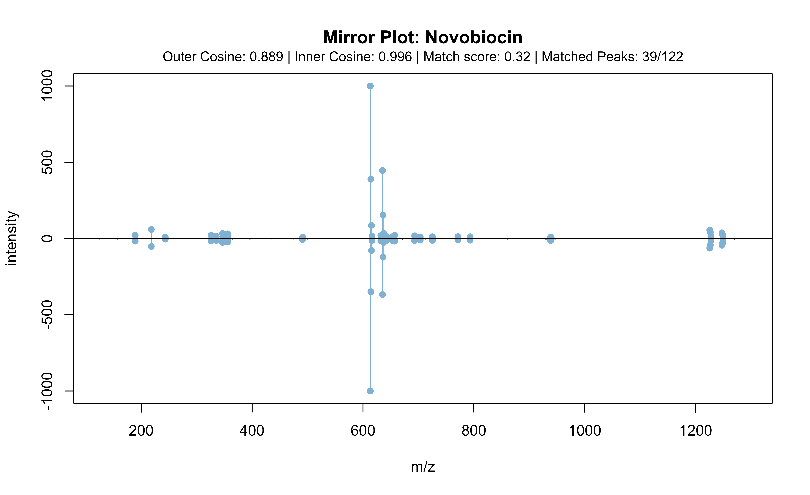
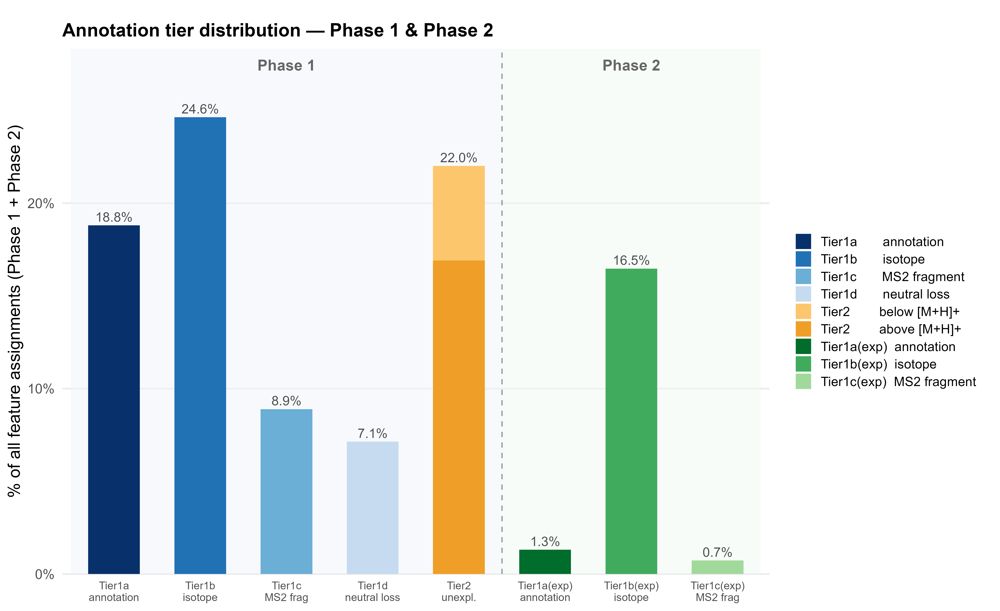

2a. MS1Match workflow: StM14 (MS1 + MS2)
Library-guided feature grouping and annotation on the StM14 dataset
Ruibing Shi
2026-10-22
02a_ms1match_StM14.RmdOverview
This tutorial walks through the full MS1Match workflow on the StM14 dataset: 14 standard compounds spiked into a Pseudomonas aeruginosa metabolome extract, measured with MS1 and MS2. It covers:
- Peak picking with
xcms(feature table +MsExperimentobject); see vignette 01_preprocessing_xcms - Building per-feature consensus MS2 spectra
- Importing the reference library and preparing adduct/neutral-loss tables
- Running the MS1Match pipeline: direct library match → Phase 1 and Phase 2 annotation → ISF (in-source fragment) annotation → joined tier assignment
- Summarizing annotation tiers (table + plot)
- Exporting results (CSV, XLSX, figures)
The anno_result built here is the input for vignette
3. Evaluate a feature-grouping tool against MS1Match.
Package objects that take a long time to (re)compute (peak picking,
MS2 consensus building) are loaded from cached .rds files
bundled with the package for time efficiency.
library(MS1Match)
library(xcms)
library(MsExperiment)
library(BiocParallel)
library(S4Vectors)
library(Spectra)
library(MsBackendMgf)
library(dplyr)1. Peak picking with xcms
runxcmsFT() is a wrapper around the standard
xcms workflow. It takes raw file paths plus the three
standard xcms parameter objects
(CentWaveParam, PeakDensityParam,
ObiwarpParam) and returns a list with the aligned feature
table (ft) and the underlying MsExperiment
object (x_exp).
# Not run by default
# Requires access to the raw .mzML/.mzXML files.
cwp <- CentWaveParam(
peakwidth = c(5, 30),
ppm = 5,
snthresh = 10,
mzdiff = 0.001,
prefilter = c(3,1000),
noise = 100,
verboseBetaColumns = TRUE
)
pdp <- PeakDensityParam(
sampleGroups = c(rep("10um", 3),rep("10um_MS2", 3),rep("4um", 3),rep("4um_MS2", 3),rep("8um", 3),rep("8um_MS2", 1)), #
bw = 5,
minFraction = 0.5, #
binSize = 0.01
)
obi <- ObiwarpParam(binSize = 0.5)
# xcms example
StM14_out <- runxcmsFT(
files_dir = "C:/Users/StM14_MS1_MS2",
sample_name = c("10um_1", "10um_2", "10um_3", "10um_MS2_1", "10um_MS2_2", "10um_MS2_3",
"4um_1", "4um_2", "4um_3", "4um_MS2_1",
"8um_1", "8um_2", "8um_3", "8um_MS2_1"),
sample_group = c(rep("10um", 3),rep("10um_MS2", 3),rep("4um", 3),rep("4um_MS2", 1),rep("8um", 3),rep("8um_MS2", 1)),
cwp = cwp,
pdp = pdp,
obi = obi,
BPPARAM = SnowParam(workers = 4)
)
# saveRDS(StM14_out,"StM14_out.rds")For this tutorial we load a precomputed run so the document knits
without access to the raw files. processFeatureTable() then
applies a retention-time window (here 60–1200 s) to drop features
outside the analytically useful range — void volume and column
wash-out.
StM14_out <- readRDS(system.file("extdata", "RDS_files", "StM14", "StM14_out.rds", package = "MS1Match"))
StM14_FT <- StM14_out$ft
StM14_x_exp <- StM14_out$result$x_exp
StM14_FT_sub <- processFeatureTable(StM14_out$ft,StM14_out$result$x_exp, rt_range = c(60,1200))
head(StM14_FT_sub)## feature_name mzmed mzmin mzmax rtmed rtmin rtmax
## 508 FT0795 219.02244 219.02233 219.02269 61.69365 61.58964 61.80972
## 509 FT0531 164.96999 164.96977 164.97012 61.84052 61.74000 62.13095
## 510 FT0210 125.98620 125.98603 125.98637 62.00363 61.93275 62.27331
## 511 FT0020 84.95968 84.95954 84.95995 62.02225 61.80972 62.22001
## 512 FT0118 110.00868 110.00855 110.00878 62.02225 61.96619 62.31397
## 513 FT0005 73.53200 73.53181 73.53202 62.09441 62.00360 62.25810
## npeaks 10um 10um_MS2 4um 4um_MS2 8um 8um_MS2 peakidx ms_level
## 508 6 0 0 3 2 1 0 15715, 1.... 1
## 509 9 3 0 3 2 1 0 273, 332.... 1
## 510 9 3 0 3 2 1 0 290, 333.... 1
## 511 9 3 0 3 2 1 0 285, 334.... 1
## 512 9 3 0 3 2 1 0 294, 334.... 1
## 513 3 2 0 0 1 0 0 274, 332.... 1
## Pool-10um Si11 MS_GA2_01_50172.mzXML Pool-10um Si11 MS_GA2_01_50173.mzXML
## 508 986.5365 1030.856
## 509 5345.6066 5820.798
## 510 27881.0806 26811.804
## 511 21329.1475 20595.198
## 512 70452.0683 72058.551
## 513 2621.4795 2399.964
## Pool-10um Si11 MS_GA2_01_50174.mzXML Pool-10um Si11 MSMS_GA2_01_50175.mzXML
## 508 1247.126 NA
## 509 6492.303 NA
## 510 26308.471 260.7511
## 511 20570.505 1009.9071
## 512 73398.795 1301.0906
## 513 2492.685 NA
## Pool-10um Si11 MSMS_GA2_01_50176.mzXML
## 508 NA
## 509 NA
## 510 1122.079
## 511 1334.485
## 512 1853.701
## 513 NA
## Pool-10um Si11 MSMS_GA2_01_50177.mzXML
## 508 NA
## 509 NA
## 510 431.1543
## 511 1019.2473
## 512 976.5900
## 513 NA
## Pool-4umSi11_neu MS_GA3_01_50025.mzXML
## 508 3136.698
## 509 5646.875
## 510 16422.514
## 511 12572.132
## 512 58055.068
## 513 3027.339
## Pool-4umSi11_neu MS_GA3_01_50026.mzXML
## 508 3016.079
## 509 5472.594
## 510 17088.917
## 511 14590.196
## 512 56725.452
## 513 2331.425
## Pool-4umSi11_neu MS_GA3_01_50027.mzXML
## 508 3267.735
## 509 6060.833
## 510 20956.833
## 511 14016.938
## 512 62844.130
## 513 2645.092
## Pool-4umSi11_neu MSMS_GA3_01_50028.mzXML
## 508 NA
## 509 NA
## 510 1633.395
## 511 2543.448
## 512 2252.719
## 513 NA
## Pool-8umSi11_neu MS_GA4_01_50029.mzXML
## 508 3024.836
## 509 5911.665
## 510 20132.505
## 511 15971.074
## 512 59971.632
## 513 2364.360
## Pool-8umSi11_neu MS_GA4_01_50030.mzXML
## 508 2816.694
## 509 5930.000
## 510 21984.645
## 511 14812.883
## 512 66831.114
## 513 2303.880
## Pool-8umSi11_neu MS_GA4_01_50031.mzXML
## 508 3057.226
## 509 5407.985
## 510 21665.877
## 511 15762.097
## 512 59871.563
## 513 1971.751
## Pool-8umSi11_neu MSMS_GA4_01_50032.mzXML intensity_median intensity_mean
## 508 NA 3016.079 2454.370
## 509 37.53582 5690.356 5256.054
## 510 1588.45603 17849.814 14843.202
## 511 3197.74033 14160.252 11563.058
## 512 3239.05424 58509.192 43182.854
## 513 NA 2399.964 2456.3582. MS2 processing
Building per-feature consensus MS2 spectra is a three-step process:
extract candidate MS2 scans for each feature
(get_ms2_peaks(), a wrapper around
xcms::chromPeakSpectra()), collapse repeated scans of the
same feature into one consensus spectrum
(combineSpectra()), then convert the result into the named
list format the annotator expects
(read_ms2_consensus()).
# Not run — kept for reference.
# Requires access to the XcmsExperiment object from last step
# Step 1 — get MS2 peaks with feature_name
ms2_peaks <- get_ms2_peaks(StM14_x_exp, expand_rt = 20, expand_mz = 0.02)
# Step 2 — build consensus
ms2_consensus <- combineSpectra(
ms2_peaks,
FUN = combinePeaksData,
ppm = 20,
peaks = "intersect",
minProp = 0.50,
intensityFun = median,
mzFun = median,
f = factor(ms2_peaks$feature_name)
)
ms2_list <- read_ms2_consensus(ms2_consensus, feature_table = StM14_FT_sub)
# Not run by default — requires the raw MSMS files and the XcmsExperiment object from last step
# Step 1: rerun get_ms2_peaks
ms2_peaks <- suppressWarnings(
get_ms2_peaks(StM14_x_exp, expand_rt = 10, expand_mz = 0.02)
)
# Step 2: combine per-feature consensus
ms2_consensus <- combineSpectra(
ms2_peaks,
f = ms2_peaks$feature_name,
method = combinePeaks,
minProp = 0.5,
intensityFun = base::mean,
mzFun = base::mean,
ppm = 10
)
# Step 3: convert to named list
ms2_list <- read_ms2_consensus(ms2_consensus, feature_table = StM14_FT_sub)
#saveRDS(ms2_consensus,"StM14_ms2_consensus.rds")In this tutorial we just load the cached result.
ms2_consensus <- readRDS(system.file("extdata", "RDS_files", "StM14", "StM14_ms2_consensus.rds", package = "MS1Match"))
ms2_list <- read_ms2_consensus(ms2_consensus, feature_table = StM14_FT_sub)3. Reference library and lookup tables
Next we load two lookup tables — an adduct table and a neutral-loss table — plus the Si14 MS1 reference spectral library used for direct library matching in the next section.
# ── 3. adduct_table ───────────────────────────────────────────────
adduct_table <- read.csv(
system.file("extdata", "Adducts", "adducts_with_4M.csv", package = "MS1Match")
)
neutral_loss_table <- read.csv(
system.file("extdata", "Neutral loss", "neutral loss database.csv", package = "MS1Match"),
check.names = TRUE
)
# ── 4. library ───────────────────────────────────────────────
Si14_library <- import_msp(
file_path = system.file(
"extdata",
"StM14_library",
"Si14_library.msp",
package = "MS1Match"
),
ionPolarity = "pos",
spectrum_type = "MS1"
)## [parser] Parsed: 14
## [parser] Filtered: 0
## [parser] Pre-dedup total: 14
## [parser] Duplicates: 0
## [parser] Building result: 14 compounds...
## [parser] Done.4. MS1Match Pipeline: library match and annotation
This is the core MS1Match pipeline, run in four steps:
-
createDirectLibMatch()+libAnnotate()— match features against the library reference within a retention-time and ppm window, scored with cosine similarity and mirror plots. -
createPeakAnnotationFromLibraryMatch()+annotateLibMatch()— annotate features from the library matches, resolving adducts and neutral losses to assign Phase 1 tiers (Tier 1a–Tier 2), with an optional Phase 2 expansion (Tier 1a_exp–Tier 1d_exp) for lower-confidence, [M+H]⁺-relative matches.cutoff_MHapplies for all tiers. -
createPeakAnnotationISF()+annotateISF()— attribute in-source fragments to their confirmed parent (Tier 1a anchor) using the MS2 consensus spectra, withinppm_isf/rt_isf_thresholdtolerances. -
join_annotation_results()— merge everything into one tier-resolved, cross-compound-aware annotation table.
DirectLibMatch_MS1_StM14_obj <- createDirectLibMatch(
FT = StM14_FT_sub,
compounds_list = Si14_library,
rt_thr_compound = 30,
rt_thr_coelution = 5,
ppm = 10,
ms_level = "MS1",
polarity = "pos"
)
direct_match_StM14_MS1_obj <- libAnnotate(
DirectLibMatch_MS1_StM14_obj,
compute_cosine = TRUE,
ppm = 20,
BPPARAM = SerialParam()
)
# Accessing MS1 Matching Results
direct_match_StM14_res_MS1 <- results(direct_match_StM14_MS1_obj)
# ── Create annotation object ───────────────────────────────────────────────
PeakAnnotation_obj_MS1 <- createPeakAnnotationFromLibraryMatch(
library_matches = direct_match_StM14_res_MS1,
adducts_df = adduct_table,
neutral_loss_table = neutral_loss_table,
FT = StM14_FT_sub,
polarity = "positive",
ppm = 30
)
# ── Run lib-match annotation (Phase 1 + optional Phase 2 expansion) ────────
StM14_annotate_res_ms1 <- annotateLibMatch(
PeakAnnotation_obj_MS1,
cutoff_MH = TRUE
)
# ── Create ISF annotation object ──────────────────────────────────────────
PeakAnnotation_ISF_obj <- createPeakAnnotationISF(
phase1_result = StM14_annotate_res_ms1,
ms2_list = ms2_list,
FT = StM14_FT_sub,
parent_col = "PI_match",
ppm_isf = 10,
rt_isf_threshold = 5.0
)
# ── Run ISF / MS2 fragment annotation ─────────────────────────────────────
isf_result <- annotateISF(PeakAnnotation_ISF_obj)
# ── Join outputs ───────
anno_result <- join_annotation_results(
FT = StM14_FT_sub,
direct_lib_list = direct_match_StM14_res_MS1,
lib_anno_list = StM14_annotate_res_ms1,
isf_result = isf_result,
include_phase2 = TRUE
)Visualizing MS1 Spectral Matches
MS1Match provides visualization tools to help inspect
the quality of spectral matches between query features and reference
library compounds using mirror. This function
plotMirrorSpectraSingle creates a mirror plot using the
matched feature peaks (on top) and reference library spectrum (on
bottom). The cosine similarity score (inner and outer cosine from
Spectra package) and the match score are displayed in the
plot. If no output_dir is provided, only the plot is shown.
If output_dir is set, the plot will be saved as a PNG file
instead.
plotMirrorSpectraSingle(object = direct_match_StM14_MS1_obj, match = direct_match_StM14_res_MS1[[5]], output_dir = NULL)
Plot All Matches and Export
To generate and export mirror plots for all matched compounds at once:
plotMirrorSpectra(object = direct_match_StM14_MS1_obj, matches = direct_match_StM14_res_MS1, output_dir = "mirror_plots_StM14_MS1")Saving the result
Vignette 3 starts from this anno_result. The package
ships a copy as
extdata/RDS_files/StM14/anno_result_StM14.rds; for your own
data, save it:
saveRDS(anno_result, "anno_result_StM14.rds")5. Exporting the annotation tables
All tables from join_annotation_results() are exported
to a single folder.
export_dir <- paste0("anno_export_StM14_MS1MS2_", format(Sys.Date(), "%Y%m%d"))
dir.create(export_dir, showWarnings = FALSE)
# Full: all features (with annotation or not), all FT columns + annotation columns
exportFeatureTable(anno_result$export_full_table,
file.path(export_dir, "anno_full_table_StM14_MS1MS2.csv"), na = "")
# Reduced: all features (with annotation or not), only ID (name/mz/rt) + annotation columns
write.csv(anno_result$export_reduced_table,
file.path(export_dir, "anno_reduced_table_StM14_MS1MS2.csv"),
na = "", row.names = FALSE)
# Reduced anno: reduced table, annotated features only (Compound_name not NA)
write.csv(anno_result$export_reduced_anno_table,
file.path(export_dir, "anno_reduced_anno_table_StM14_MS1MS2.csv"),
na = "", row.names = FALSE)
# Summary: one row per feature x compound x Lib_group
write.csv(anno_result$export_feature_compound_summary,
file.path(export_dir, "anno_feature_compound_summary_StM14_MS1MS2.csv"),
na = "", row.names = FALSE)
# Match: annotation evidence before FT join
write.csv(anno_result$export_match_table,
file.path(export_dir, "anno_match_table_StM14_MS1MS2.csv"),
na = "", row.names = FALSE)6. Tier distribution: plot and per-compound tables
This section builds the summary figure: a stacked bar chart of
annotation tiers, split into Phase 1 (blue, direct annotation) and Phase
2 (green, expanded annotation), with per-tier percentages of all feature
assignments. Tier 2 (unexplained features) is further split into
below/above [M+H]+(in-source fragments vs. higher
adducts/multimers).
library(ggplot2)
library(RColorBrewer)
# ── Input ─────────────────────────────────────────────────────────────────────
dat_all <- anno_result$export_feature_compound_summary %>% data.frame()
dat_all$cutoff_to_MH[dat_all$reference_tier != "Tier2_Unexplained"] <- NA_character_
# ── plot_tier ─────────────────────────────────────────────────────────────────
is_tier2 <- !is.na(dat_all$reference_tier) &
dat_all$reference_tier == "Tier2_Unexplained"
dat_all$plot_tier <- dat_all$reference_tier
dat_all$plot_tier[is_tier2] <- paste0("Tier2_", dat_all$cutoff_to_MH[is_tier2])
# ── Phase split ───────────────────────────────────────────────────────────────
dat_p1 <- dat_all[!is.na(dat_all$annotation_phase) &
dat_all$annotation_phase == "Phase1", ]
dat_p2 <- dat_all[!is.na(dat_all$annotation_phase) &
grepl("Phase2", dat_all$annotation_phase), ]
# ── Colour palettes ───────────────────────────────────────────────────────────
.p1_blues <- RColorBrewer::brewer.pal(9, "Blues")
.greens <- RColorBrewer::brewer.pal(9, "Greens")
tier_colors <- c(
"Tier1a_AnnoMatch" = .p1_blues[9],
"Tier1b_Isotope" = .p1_blues[7],
"Tier1c_MS2Fragment" = .p1_blues[5],
"Tier1d_NeutralLoss" = .p1_blues[3],
"Tier2_below_MH" = "#FCC66D",
"Tier2_above_MH" = "#EF9F27",
"Tier1a_exp_AnnoMatch" = .greens[8],
"Tier1b_exp_Isotope" = .greens[6],
"Tier1c_MS2Fragment_exp" = .greens[4],
"Tier1d_exp_NeutralLoss" = .greens[2]
)
tier_labels <- c(
"Tier1a_AnnoMatch" = "Tier1a annotation",
"Tier1b_Isotope" = "Tier1b isotope",
"Tier1c_MS2Fragment" = "Tier1c MS2 fragment",
"Tier1d_NeutralLoss" = "Tier1d neutral loss",
"Tier2_below_MH" = "Tier2 below [M+H]+",
"Tier2_above_MH" = "Tier2 above [M+H]+",
"Tier1a_exp_AnnoMatch" = "Tier1a(exp) annotation",
"Tier1b_exp_Isotope" = "Tier1b(exp) isotope",
"Tier1c_MS2Fragment_exp" = "Tier1c(exp) MS2 fragment",
"Tier1d_exp_NeutralLoss" = "Tier1d(exp) neutral loss"
)
p1_stack <- c("Tier1a_AnnoMatch", "Tier1b_Isotope",
"Tier1c_MS2Fragment", "Tier1d_NeutralLoss",
"Tier2_below_MH", "Tier2_above_MH")
p2_stack <- c("Tier1a_exp_AnnoMatch", "Tier1b_exp_Isotope",
"Tier1c_MS2Fragment_exp", "Tier1d_exp_NeutralLoss")
p1_xlevels <- c("Tier1a_AnnoMatch", "Tier1b_Isotope",
"Tier1c_MS2Fragment", "Tier1d_NeutralLoss", "Tier2")
p2_xlevels <- c("Tier1a_exp_AnnoMatch", "Tier1b_exp_Isotope",
"Tier1c_MS2Fragment_exp", "Tier1d_exp_NeutralLoss")
all_xlevels <- c(p1_xlevels, p2_xlevels)
all_xlabels <- c(
"Tier1a_AnnoMatch" = "Tier1a\nannotation",
"Tier1b_Isotope" = "Tier1b\nisotope",
"Tier1c_MS2Fragment" = "Tier1c\nMS2 frag",
"Tier1d_NeutralLoss" = "Tier1d\nneutral loss",
"Tier2" = "Tier2\nunexpl.",
"Tier1a_exp_AnnoMatch" = "Tier1a(exp)\nannotation",
"Tier1b_exp_Isotope" = "Tier1b(exp)\nisotope",
"Tier1c_MS2Fragment_exp" = "Tier1c(exp)\nMS2 frag",
"Tier1d_exp_NeutralLoss" = "Tier1d(exp)\nneutral loss"
)
# ── Helper: build summary df ──────────────────────────────────────────────────
build_summary <- function(dat, stack_levels, x_levels) {
dat$plot_tier <- factor(dat$plot_tier, levels = stack_levels)
x_pos_chr <- as.character(dat$plot_tier)
x_pos_chr[grepl("^Tier2", x_pos_chr)] <- "Tier2"
dat$x_pos <- factor(x_pos_chr, levels = x_levels)
overall <- as.data.frame(
table(x_pos = dat$x_pos, plot_tier = dat$plot_tier),
stringsAsFactors = FALSE
)
overall$x_pos <- factor(overall$x_pos, levels = all_xlevels)
overall$plot_tier <- factor(overall$plot_tier, levels = names(tier_colors))
overall
}
n_grand <- nrow(dat_all)
overall_p1 <- build_summary(dat_p1, p1_stack, p1_xlevels)
overall_p2 <- build_summary(dat_p2, p2_stack, p2_xlevels)
overall <- rbind(overall_p1, overall_p2)
overall$pct <- overall$Freq / n_grand * 100
active_tiers <- intersect(names(tier_colors),
as.character(unique(overall$plot_tier[overall$Freq > 0])))
active_xlevels <- intersect(all_xlevels,
as.character(unique(overall$x_pos[overall$Freq > 0])))
overall <- overall[overall$Freq > 0, ]
overall$plot_tier <- factor(overall$plot_tier, levels = active_tiers)
overall$x_pos <- factor(overall$x_pos, levels = active_xlevels)
totals <- aggregate(pct ~ x_pos, data = overall, FUN = sum)
totals$x_pos <- factor(totals$x_pos, levels = active_xlevels)
active_p1_x <- intersect(p1_xlevels, active_xlevels)
active_p2_x <- intersect(p2_xlevels, active_xlevels)
n_p1_active <- length(active_p1_x)
n_p2_active <- length(active_p2_x)
phase_split_active <- n_p1_active + 0.5
p2_xmid_active <- if (n_p2_active > 0) phase_split_active + n_p2_active / 2 else NA_real_
# ── plot ──────────────────────────────────────────────────────────────────────
p <- ggplot(overall, aes(x = x_pos, y = pct, fill = plot_tier)) +
annotate("rect",
xmin = 0.5, xmax = phase_split_active,
ymin = -Inf, ymax = Inf,
fill = "#F0F4FA", alpha = 0.5) +
{if (n_p2_active > 0)
annotate("rect",
xmin = phase_split_active,
xmax = phase_split_active + n_p2_active,
ymin = -Inf, ymax = Inf,
fill = "#F0FAF4", alpha = 0.5)} +
{if (n_p2_active > 0)
annotate("segment",
x = phase_split_active, xend = phase_split_active,
y = 0, yend = Inf,
linetype = "dashed", colour = "grey60", linewidth = 0.4)} +
annotate("text", x = (n_p1_active + 1) / 2, y = Inf,
label = "Phase 1",
vjust = 2, size = 3.5, colour = "grey40", fontface = "bold") +
{if (n_p2_active > 0 && !is.na(p2_xmid_active))
annotate("text", x = p2_xmid_active, y = Inf,
label = "Phase 2",
vjust = 2, size = 3.5, colour = "grey40", fontface = "bold")} +
geom_col(width = 0.6) +
geom_text(data = totals[totals$pct > 0, ],
aes(x = x_pos, y = pct, label = sprintf("%.1f%%", pct), fill = NULL),
vjust = -0.4, size = 3.0, colour = "grey30") +
scale_fill_manual(values = tier_colors[active_tiers],
labels = tier_labels[active_tiers],
name = NULL) +
scale_x_discrete(labels = all_xlabels[active_xlevels]) +
scale_y_continuous(expand = expansion(mult = c(0, 0.15)),
labels = function(x) paste0(x, "%")) +
coord_cartesian(clip = "off") +
labs(
title = "Annotation tier distribution — Phase 1 & Phase 2",
x = NULL,
y = "% of all feature assignments (Phase 1 + Phase 2)"
) +
theme_minimal(base_size = 11) +
theme(
legend.position = "right",
legend.key.size = unit(0.4, "cm"),
legend.text = element_text(size = 8.5),
panel.grid.major.x = element_blank(),
panel.grid.minor = element_blank(),
axis.text.x = element_text(size = 7),
plot.title = element_text(size = 12, face = "bold"),
plot.margin = margin(t = 15, r = 10, b = 5, l = 5)
)
print(p)
# ── Phase 1 per-compound summary ──────────────────────────────────────
tier_cols_p1 <- c("Tier1a_AnnoMatch", "Tier1b_Isotope",
"Tier1c_MS2Fragment", "Tier1d_NeutralLoss",
"Tier2_below_MH", "Tier2_above_MH")
per_cpd <- do.call(rbind, lapply(
split(dat_p1, dat_p1$Compound_name),
function(df) {
n_total <- nrow(df)
counts <- table(factor(df$plot_tier, levels = tier_cols_p1))
data.frame(
Compound_name = df$Compound_name[1],
n_total = n_total,
n_Tier1a = as.integer(counts["Tier1a_AnnoMatch"]),
n_Tier1b = as.integer(counts["Tier1b_Isotope"]),
n_Tier1c_MS2 = as.integer(counts["Tier1c_MS2Fragment"]),
n_Tier1d = as.integer(counts["Tier1d_NeutralLoss"]),
n_Tier2_below = as.integer(counts["Tier2_below_MH"]),
n_Tier2_above = as.integer(counts["Tier2_above_MH"]),
pct_Tier1a = round(counts["Tier1a_AnnoMatch"] / n_total * 100, 1),
pct_Tier1b = round(counts["Tier1b_Isotope"] / n_total * 100, 1),
pct_Tier1c_MS2 = round(counts["Tier1c_MS2Fragment"] / n_total * 100, 1),
pct_Tier1d = round(counts["Tier1d_NeutralLoss"] / n_total * 100, 1),
pct_Tier2_below = round(counts["Tier2_below_MH"] / n_total * 100, 1),
pct_Tier2_above = round(counts["Tier2_above_MH"] / n_total * 100, 1),
stringsAsFactors = FALSE, row.names = NULL
)
}
))
# ── Phase 2 per-compound summary ──────────────────────────────────────
tier_cols_p2 <- c("Tier1a_exp_AnnoMatch", "Tier1b_exp_Isotope",
"Tier1c_MS2Fragment_exp", "Tier1d_exp_NeutralLoss")
per_cpd_p2 <- do.call(rbind, lapply(
split(dat_p2, dat_p2$Compound_name),
function(df) {
n_total <- nrow(df)
counts <- table(factor(df$plot_tier, levels = tier_cols_p2))
data.frame(
Compound_name = df$Compound_name[1],
n_total = n_total,
n_Tier1a_exp = as.integer(counts["Tier1a_exp_AnnoMatch"]),
n_Tier1b_exp = as.integer(counts["Tier1b_exp_Isotope"]),
n_Tier1c_MS2_exp = as.integer(counts["Tier1c_MS2Fragment_exp"]),
n_Tier1d_exp = as.integer(counts["Tier1d_exp_NeutralLoss"]),
pct_Tier1a_exp = round(counts["Tier1a_exp_AnnoMatch"] / n_total * 100, 1),
pct_Tier1b_exp = round(counts["Tier1b_exp_Isotope"] / n_total * 100, 1),
pct_Tier1c_MS2_exp = round(counts["Tier1c_MS2Fragment_exp"] / n_total * 100, 1),
pct_Tier1d_exp = round(counts["Tier1d_exp_NeutralLoss"] / n_total * 100, 1),
stringsAsFactors = FALSE, row.names = NULL
)
}
))
per_cpd <- per_cpd[order(per_cpd$n_total, decreasing = TRUE), ]
per_cpd_p2 <- per_cpd_p2[order(per_cpd_p2$n_total, decreasing = TRUE), ]
rownames(per_cpd) <- NULL
rownames(per_cpd_p2) <- NULL
cat("\n── Phase 1 per-compound summary ──\n")##
## ── Phase 1 per-compound summary ──
print(per_cpd, row.names = FALSE)## Compound_name n_total n_Tier1a n_Tier1b n_Tier1c_MS2 n_Tier1d
## Naproxen 96 18 26 11 9
## Indole-3-acetyl-L-valine 65 15 25 7 0
## Trans-Ferulic acid 60 14 15 5 9
## Phlorizin 52 12 22 8 3
## p-Coumaric acid 48 13 11 2 12
## 2-Methoxybenzoic acid 46 17 12 9 0
## Rutin 42 6 14 3 4
## Novobiocin 39 8 15 2 2
## Nortriptylin 33 1 8 6 7
## Indole-3-carboxaldehyde 28 8 8 3 2
## 3-Indoleacetonitrile 22 6 4 2 1
## Biochanin A 17 7 5 0 0
## Trimetoprim 6 2 2 2 0
## Kinetin 5 2 2 1 0
## n_Tier2_below n_Tier2_above pct_Tier1a pct_Tier1b pct_Tier1c_MS2 pct_Tier1d
## 4 28 18.8 27.1 11.5 9.4
## 1 17 23.1 38.5 10.8 0.0
## 1 16 23.3 25.0 8.3 15.0
## 0 7 23.1 42.3 15.4 5.8
## 0 10 27.1 22.9 4.2 25.0
## 2 6 37.0 26.1 19.6 0.0
## 12 3 14.3 33.3 7.1 9.5
## 5 7 20.5 38.5 5.1 5.1
## 5 6 3.0 24.2 18.2 21.2
## 1 6 28.6 28.6 10.7 7.1
## 1 8 27.3 18.2 9.1 4.5
## 3 2 41.2 29.4 0.0 0.0
## 0 0 33.3 33.3 33.3 0.0
## 0 0 40.0 40.0 20.0 0.0
## pct_Tier2_below pct_Tier2_above
## 4.2 29.2
## 1.5 26.2
## 1.7 26.7
## 0.0 13.5
## 0.0 20.8
## 4.3 13.0
## 28.6 7.1
## 12.8 17.9
## 15.2 18.2
## 3.6 21.4
## 4.5 36.4
## 17.6 11.8
## 0.0 0.0
## 0.0 0.0
cat("\n── Phase 2 per-compound summary ──\n")##
## ── Phase 2 per-compound summary ──
print(per_cpd_p2, row.names = FALSE)## Compound_name n_total n_Tier1a_exp n_Tier1b_exp n_Tier1c_MS2_exp
## 2-Methoxybenzoic acid 24 3 20 1
## Indole-3-acetyl-L-valine 21 3 18 0
## Indole-3-carboxaldehyde 17 1 15 1
## Naproxen 17 0 17 0
## Trans-Ferulic acid 15 0 15 0
## Nortriptylin 12 2 10 0
## p-Coumaric acid 11 0 10 1
## Phlorizin 4 0 4 0
## 3-Indoleacetonitrile 2 0 2 0
## Rutin 2 0 2 0
## Biochanin A 1 0 0 1
## Trimetoprim 1 0 0 1
## n_Tier1d_exp pct_Tier1a_exp pct_Tier1b_exp pct_Tier1c_MS2_exp pct_Tier1d_exp
## 0 12.5 83.3 4.2 0
## 0 14.3 85.7 0.0 0
## 0 5.9 88.2 5.9 0
## 0 0.0 100.0 0.0 0
## 0 0.0 100.0 0.0 0
## 0 16.7 83.3 0.0 0
## 0 0.0 90.9 9.1 0
## 0 0.0 100.0 0.0 0
## 0 0.0 100.0 0.0 0
## 0 0.0 100.0 0.0 0
## 0 0.0 0.0 100.0 0
## 0 0.0 0.0 100.0 07. Exporting the figure
The tier-distribution plot is exported in three formats — PDF and SVG as vector formats for publication figures, PNG as a raster preview — at a fixed 180 × 120 mm size.
# ── Export ─────────────────────────────────────────────────────
fig_width_mm <- 180
fig_height_mm <- 120
fig_dpi <- 600
fig_base <- "StM14_tier_distribution"
ggplot2::ggsave(paste0(fig_base, ".pdf"),
plot = p,
width = fig_width_mm,
height = fig_height_mm,
units = "mm",
device = cairo_pdf)
ggplot2::ggsave(paste0(fig_base, ".png"),
plot = p,
width = fig_width_mm,
height = fig_height_mm,
units = "mm",
dpi = fig_dpi)
ggplot2::ggsave(paste0(fig_base, ".svg"),
plot = p,
width = fig_width_mm,
height = fig_height_mm,
units = "mm",
device = svglite::svglite)
message("Exported: ", fig_base, ".pdf / .png / .svg")8. Exporting per-compound summaries to Excel
export_tier_summary_xlsx() writes the Phase 1 and Phase
2 per-compound tables from Section 6 to two styled sheets in a single
workbook (header colour matches the blue/green Phase 1/Phase 2
convention used in the plot).
library(openxlsx)
# ── per-compound summaries to Excel ────────────────────────────────────
# ── helper: header ──────────────────────────────
add_styled_sheet <- function(wb, sheet_name, df, header_colour) {
openxlsx::addWorksheet(wb, sheet_name)
openxlsx::writeData(wb, sheet_name, df, startRow = 1, startCol = 1,
headerStyle = openxlsx::createStyle(
fontName = "Arial",
fontSize = 10,
fontColour = "#FFFFFF",
fgFill = header_colour,
halign = "CENTER",
valign = "CENTER",
textDecoration = "bold",
border = "Bottom",
borderColour = "#D0D0D0"
))
body_style <- openxlsx::createStyle(
fontName = "Arial", fontSize = 10,
border = "Bottom", borderColour = "#D0D0D0"
)
if (nrow(df) > 0)
openxlsx::addStyle(wb, sheet_name, body_style,
rows = 2:(nrow(df) + 1),
cols = 1:ncol(df),
gridExpand = TRUE)
num_cols <- which(sapply(df, is.numeric))
if (length(num_cols) > 0 && nrow(df) > 0) {
num_style <- openxlsx::createStyle(
fontName = "Arial", fontSize = 10, halign = "CENTER",
border = "Bottom", borderColour = "#D0D0D0"
)
openxlsx::addStyle(wb, sheet_name, num_style,
rows = 2:(nrow(df) + 1),
cols = num_cols,
gridExpand = TRUE)
}
openxlsx::setColWidths(wb, sheet_name, cols = 1:ncol(df), widths = "auto")
openxlsx::freezePane(wb, sheet_name, firstRow = TRUE)
}
export_tier_summary_xlsx <- function(per_cpd, per_cpd_p2,
file = "annotation_tier_summary.xlsx") {
if (!requireNamespace("openxlsx", quietly = TRUE))
stop("Please install openxlsx: install.packages('openxlsx')")
wb <- openxlsx::createWorkbook()
add_styled_sheet(wb, "Phase1_per_compound", per_cpd, "#2F6496") # dark blue
add_styled_sheet(wb, "Phase2_per_compound", per_cpd_p2, "#2E7D4F") # dark green
openxlsx::saveWorkbook(wb, file, overwrite = TRUE)
message("Saved: ", file)
invisible(file)
}
# ───────────────────────────────────────────────────────────────────────
export_tier_summary_xlsx(per_cpd, per_cpd_p2,
file = "StM14_annotation_tier_summary.xlsx")Final look at the two per-compound summary tables:
per_cpd## Compound_name n_total n_Tier1a n_Tier1b n_Tier1c_MS2 n_Tier1d
## 1 Naproxen 96 18 26 11 9
## 2 Indole-3-acetyl-L-valine 65 15 25 7 0
## 3 Trans-Ferulic acid 60 14 15 5 9
## 4 Phlorizin 52 12 22 8 3
## 5 p-Coumaric acid 48 13 11 2 12
## 6 2-Methoxybenzoic acid 46 17 12 9 0
## 7 Rutin 42 6 14 3 4
## 8 Novobiocin 39 8 15 2 2
## 9 Nortriptylin 33 1 8 6 7
## 10 Indole-3-carboxaldehyde 28 8 8 3 2
## 11 3-Indoleacetonitrile 22 6 4 2 1
## 12 Biochanin A 17 7 5 0 0
## 13 Trimetoprim 6 2 2 2 0
## 14 Kinetin 5 2 2 1 0
## n_Tier2_below n_Tier2_above pct_Tier1a pct_Tier1b pct_Tier1c_MS2 pct_Tier1d
## 1 4 28 18.8 27.1 11.5 9.4
## 2 1 17 23.1 38.5 10.8 0.0
## 3 1 16 23.3 25.0 8.3 15.0
## 4 0 7 23.1 42.3 15.4 5.8
## 5 0 10 27.1 22.9 4.2 25.0
## 6 2 6 37.0 26.1 19.6 0.0
## 7 12 3 14.3 33.3 7.1 9.5
## 8 5 7 20.5 38.5 5.1 5.1
## 9 5 6 3.0 24.2 18.2 21.2
## 10 1 6 28.6 28.6 10.7 7.1
## 11 1 8 27.3 18.2 9.1 4.5
## 12 3 2 41.2 29.4 0.0 0.0
## 13 0 0 33.3 33.3 33.3 0.0
## 14 0 0 40.0 40.0 20.0 0.0
## pct_Tier2_below pct_Tier2_above
## 1 4.2 29.2
## 2 1.5 26.2
## 3 1.7 26.7
## 4 0.0 13.5
## 5 0.0 20.8
## 6 4.3 13.0
## 7 28.6 7.1
## 8 12.8 17.9
## 9 15.2 18.2
## 10 3.6 21.4
## 11 4.5 36.4
## 12 17.6 11.8
## 13 0.0 0.0
## 14 0.0 0.0
per_cpd_p2## Compound_name n_total n_Tier1a_exp n_Tier1b_exp n_Tier1c_MS2_exp
## 1 2-Methoxybenzoic acid 24 3 20 1
## 2 Indole-3-acetyl-L-valine 21 3 18 0
## 3 Indole-3-carboxaldehyde 17 1 15 1
## 4 Naproxen 17 0 17 0
## 5 Trans-Ferulic acid 15 0 15 0
## 6 Nortriptylin 12 2 10 0
## 7 p-Coumaric acid 11 0 10 1
## 8 Phlorizin 4 0 4 0
## 9 3-Indoleacetonitrile 2 0 2 0
## 10 Rutin 2 0 2 0
## 11 Biochanin A 1 0 0 1
## 12 Trimetoprim 1 0 0 1
## n_Tier1d_exp pct_Tier1a_exp pct_Tier1b_exp pct_Tier1c_MS2_exp pct_Tier1d_exp
## 1 0 12.5 83.3 4.2 0
## 2 0 14.3 85.7 0.0 0
## 3 0 5.9 88.2 5.9 0
## 4 0 0.0 100.0 0.0 0
## 5 0 0.0 100.0 0.0 0
## 6 0 16.7 83.3 0.0 0
## 7 0 0.0 90.9 9.1 0
## 8 0 0.0 100.0 0.0 0
## 9 0 0.0 100.0 0.0 0
## 10 0 0.0 100.0 0.0 0
## 11 0 0.0 0.0 100.0 0
## 12 0 0.0 0.0 100.0 0Session info
## R version 4.6.1 (2026-06-24 ucrt)
## Platform: x86_64-w64-mingw32/x64
## Running under: Windows 11 x64 (build 26100)
##
## Matrix products: default
## LAPACK version 3.12.1
##
## locale:
## [1] LC_COLLATE=English_United States.utf8
## [2] LC_CTYPE=English_United States.utf8
## [3] LC_MONETARY=English_United States.utf8
## [4] LC_NUMERIC=C
## [5] LC_TIME=English_United States.utf8
##
## time zone: Europe/Berlin
## tzcode source: internal
##
## attached base packages:
## [1] stats4 stats graphics grDevices utils datasets methods
## [8] base
##
## other attached packages:
## [1] RColorBrewer_1.1-3 ggplot2_4.0.3 dplyr_1.2.1
## [4] MsBackendMgf_1.20.1 Spectra_1.22.2 S4Vectors_0.50.3
## [7] BiocGenerics_0.58.1 generics_0.1.4 MsExperiment_1.14.0
## [10] ProtGenerics_1.44.0 xcms_4.10.1 BiocParallel_1.46.0
## [13] MS1Match_0.0.0.9000
##
## loaded via a namespace (and not attached):
## [1] DBI_1.3.0 rlang_1.3.0
## [3] magrittr_2.0.5 clue_0.3-68
## [5] MassSpecWavelet_1.78.2 otel_0.2.0
## [7] matrixStats_1.5.0 compiler_4.6.1
## [9] PTMods_1.0.0 systemfonts_1.3.2
## [11] vctrs_0.7.3 reshape2_1.4.5
## [13] stringr_1.6.0 crayon_1.5.3
## [15] pkgconfig_2.0.3 MetaboCoreUtils_1.20.1
## [17] fastmap_1.2.0 XVector_0.52.0
## [19] labeling_0.4.3 rmarkdown_2.32
## [21] preprocessCore_1.74.0 ragg_1.5.2
## [23] purrr_1.2.2 xfun_0.62
## [25] MultiAssayExperiment_1.38.0 cachem_1.1.0
## [27] jsonlite_2.0.0 progress_1.2.3
## [29] DelayedArray_0.38.2 prettyunits_1.2.0
## [31] parallel_4.6.1 cluster_2.1.8.3
## [33] R6_2.6.1 bslib_0.12.0
## [35] stringi_1.8.9 limma_3.68.5
## [37] GenomicRanges_1.64.0 jquerylib_0.1.4
## [39] iterators_1.0.14 Rcpp_1.1.2
## [41] Seqinfo_1.2.0 SummarizedExperiment_1.42.0
## [43] knitr_1.52 IRanges_2.46.0
## [45] Matrix_1.7-6 igraph_2.3.4
## [47] tidyselect_1.2.1 rstudioapi_0.19.0
## [49] abind_1.4-8 yaml_2.3.12
## [51] doParallel_1.0.17 codetools_0.2-20
## [53] affy_1.90.0 lattice_0.23-1
## [55] tibble_3.3.1 plyr_1.8.9
## [57] withr_3.0.3 Biobase_2.72.0
## [59] S7_0.2.2 evaluate_1.0.5
## [61] desc_1.4.3 pillar_1.11.1
## [63] affyio_1.82.0 BiocManager_1.30.27
## [65] MatrixGenerics_1.24.0 foreach_1.5.2
## [67] MSnbase_2.38.1 MALDIquant_1.22.3
## [69] ncdf4_1.24 hms_1.1.4
## [71] scales_1.4.0 glue_1.8.1
## [73] MsFeatures_1.20.0 lazyeval_0.2.3
## [75] tools_4.6.1 mzID_1.50.0
## [77] data.table_1.18.6.1 QFeatures_1.22.0
## [79] vsn_3.80.0 mzR_2.46.0
## [81] enviPat_2.8 fs_2.1.0
## [83] XML_3.99-0.25 grid_4.6.1
## [85] impute_1.86.0 tidyr_1.3.2
## [87] MsCoreUtils_1.24.0 patchwork_1.3.2
## [89] PSMatch_1.16.0 cli_3.6.6
## [91] textshaping_1.0.5 S4Arrays_1.12.1
## [93] AnnotationFilter_1.36.0 pcaMethods_2.4.0
## [95] gtable_0.3.6 sass_0.4.10
## [97] digest_0.6.39 progressr_1.1.0
## [99] SparseArray_1.12.3 ggrepel_0.9.8
## [101] htmlwidgets_1.6.4 farver_2.1.2
## [103] htmltools_0.5.9 pkgdown_2.2.1
## [105] lifecycle_1.0.5 statmod_1.5.2
## [107] MASS_7.3-66